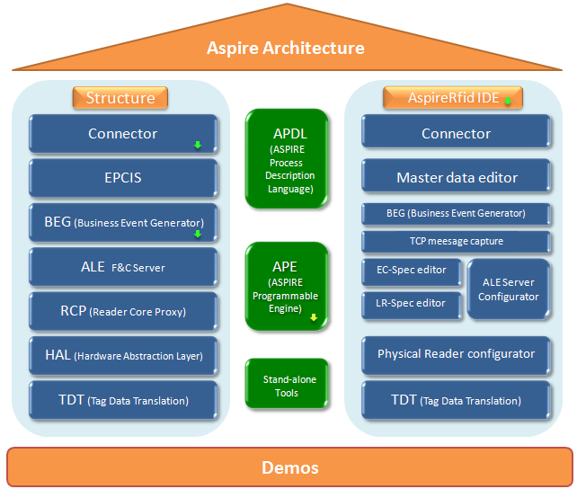

PDF
PDF History
HistoryDocumentation
The license used by AspireRFID documentation is the Creative Commons Share Alike (by-sa) .
.Aspire architecture
Aspire Architecture
Click the different modules of Aspire Architecture below to access
the detailed introduction.
Click little arrows at the bottom right of some modules to download the corresponding src/binaire files.

Some of the modules bind a set of contributions from different partners, downloads are available in the introduction pages of the related modules.
Main access
The AspireRFID trunk source code is available on the forge SVN. Having an SVN client you can get the source with the following command:svn checkout svn://svn.forge.objectweb.org/svnroot/aspire/trunkThe documentation for the AspireRFID trunk can be found below or at the menu on the right:- AspireRFID Architecture
- Tag Data Translation
- Hardware Abstraction Layer
- Reader Proxies
- F&C Server ALE
- Supported Readers
- Business Event Generator
- EPCIS Repository
- Connector
- AspireRfid IDE
- Standalone Testing Tools
- Demos
- Deployment of ALE Server on OSGi
- End-to-End Management
- OSGi Bundles for servers
- NFC (Near Field Communication)
- Utilities
Main
Learn
Use
Contribute
- Developer Instructions
- Source-SVN Access
- Browse sources
- Code guidelines
- Roadmap
- Summer of code
- Internships
Community
Other
Search
Documentation
- AspireRFID Architecture
- Tag Data Translation
- Hardware Abstraction Layer
- Reader Proxies
- F&C Server (ALE)
- Business Event Generator
- EPCIS Repository
- Object Name Service
- Connector
- Programmable Engine
- APDL
- AspireRfid IDE
- AspireRfidIDE Core
- ALE Server Configurator
- BEG
- Physical Reader Configurator
- EC-Spec Editor
- LR-Spec Editor
- Master Data Editor
- Business Loc. GMF Editor
- TCP Message Capturer
- BPWM Editor
- Prog. Engine Configurator
- Connector Configurator
- Privacy Framework Tool
- OSGi Bundles
- Standalone Testing Tools
- Deliverables
- Best Practices
- Glossary
- Demos
Main > ASPIRE RFID Documentation
(en)
Creator: donsez Date: 2008/07/23 20:26
Last Author: driss_r Date: 2014/11/27 15:21
Creator: donsez Date: 2008/07/23 20:26
Last Author: driss_r Date: 2014/11/27 15:21